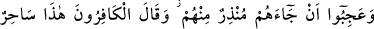
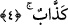
el-Müfredât’ta der ki: (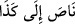) ifâdesi, “O, falancaya sığındı;” (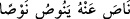)
ifâdesi ise “ondan uzaklaştı” anlamına gelir. Bu durumda (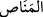) kelimesi “sığınak”
demektir.
Meâlim’de şöyle buyurulmuştur: Mekke kâfirlerinin âdeti şuydu ki, savaş meydanında
iş zorlaşınca (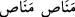) yâni “kaçın!” derlerdi. Hak Teâlâ haber veriyor ki onlar
perişan vaziyette azâba girerken (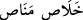) “kaçış yolu nerede?” diyecekler, ama
orada kaçış yeri olmayacak.
4. Aralarından kendilerine bir uyarıcının gelmesine şaştılar ve kâfirler: Bu pek
yalancı bir sihirbazdır!
Mekkeli kâfirler “aralarından kendilerine” cehennem konusunda onları uyaran “bir
uyarıcının” yâni kendi cinslerinden hattâ dünyevî reislik ve malvarlığı bakımından
kendilerinden daha aşağı seviyede bir peygamber “gelmesine” hayret edip “şaştılar”
ve ayrıca onlar böyle bir şeyi ihtimal dışı bir şey sayarak müthiş bir muhâlefetle
karşıladılar. Diğer bir ifâdeyle, onlar böyle bir şeyin meydana gelebileceğine
inanmıyorlardı; bu nedenle şaştılar.
Onlar, “Hiç şüphesiz Muhammed, zâhirî hilkat ve bâtınî ahlâk, nesep, şekil ve sûret
bakımından bizim dengimizdir. Aramızdan sadece böyle birisinin yüksek bir makama
erebilmiş olması nasıl düşünülebilir!” dediler. Hâlbuki onlar bu duruma şaşarken
yontulmuş şeylerin tanrı olmasına hiç hayret etmiyorlardı! Bu apaçık bir çelişkidir. Hz.
Peygamber (s.a.) hakkında ne diyeceklerini bilemediklerinden onu yalancı ve büyücü
olmakla itham ettiler. Nitekim Allah Teâlâ bu ithamı şu şekilde anlatır:
“Ve kâfirler: Bu” uyarıcı, peygamberlik ve vahiy inzâli gibi hususlarda “pek
yalancı” harikulâde şeyler gösteren “bir sihirbazdır!”
Âyette, sonlarının biribirine uygun olmasını sağlamak için (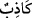) yerine (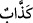)
denilmiştir. Ayrıca, Allah hakkında yalan söylemek başkaları hakkında yalan söylemeğe
benzemediği için, bir de -kendi iddiâlarına göre- Kur’an’da çok sayıda yalan bulunduğu
için bir mübâlağa sigası olan “kezzâb” tercih edilmiştir.
(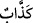) kelimesinin aksine, (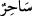) kelimesinde mübâlağa sigasının kullanılmamasına
gelince, Kur’an âyetlerinin herbirinde yalan olduğu müşriklerce düşünülebilmesine
rağmen, âyetlere nazaran çok daha az sayıda olan hârikulâde şeyler gösterme hususunda
böyle bir fazlalığın düşünülememesinden ileri gelmiştir. Bu makamın âyetle ilgili olarak
fakîrin (Bursevî) gönlüne ilhâm ettiği mânâ budur.